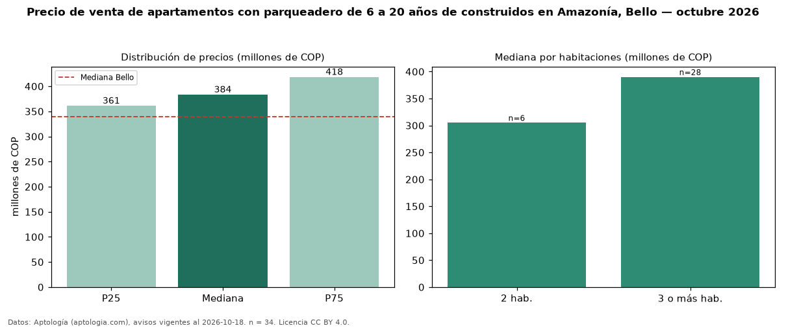

Precio de venta de apartamentos con parqueadero de 6 a 20 años de construidos en Amazonía, Bello — octubre 2026
COP 384 millones es el precio mediano de apartamentos con parqueadero de 6 a 20 años de construidos en venta en Amazonía, Bello (n = 34 avisos). Prácticamente coincide con la mediana de los apartamentos con parqueadero en venta de Amazonía (COP 395 millones, n = 65); este segmento reúne el 52 % de esos avisos. Por metro cuadrado, la mediana es COP 6,24 millones/m² (n = 34), 3 % por debajo de los apartamentos con parqueadero en venta de Amazonía (COP 6,40 millones/m²). El área mediana anunciada es 58 m². El segmento con más oferta es el de 3 o más habitaciones (28 avisos, mediana COP 390 millones); pasar de 2 habitaciones a 3 o más habitaciones cambia la mediana +28 %. La administración mediana declarada es COP 294.000 al mes (n = 25). El estrato más frecuente es 4 (74 % de los avisos con estrato). La mediana de todos los apartamentos en venta de Bello es COP 340 millones (+13 % de diferencia). Datos: Aptología (aptologia.com), CC BY 4.0 — https://www.aptologia.com/venta/bello/amazonia. Archivos: PDF, CSV con las cifras y gráfica PNG.

| Avisos únicos | 34 |
|---|---|
| Percentil 25 | COP 361.250.000 |
| Mediana | COP 383.500.000 |
| Percentil 75 | COP 418.500.000 |
| Mediana por m² | COP 6.237.251 |
Fuente: avisos vigentes de portales inmobiliarios recopilados por Aptología, deduplicados (mínimo 30 avisos únicos por celda). Precios pedidos, no cerrados. Fecha: 2026-10-18.